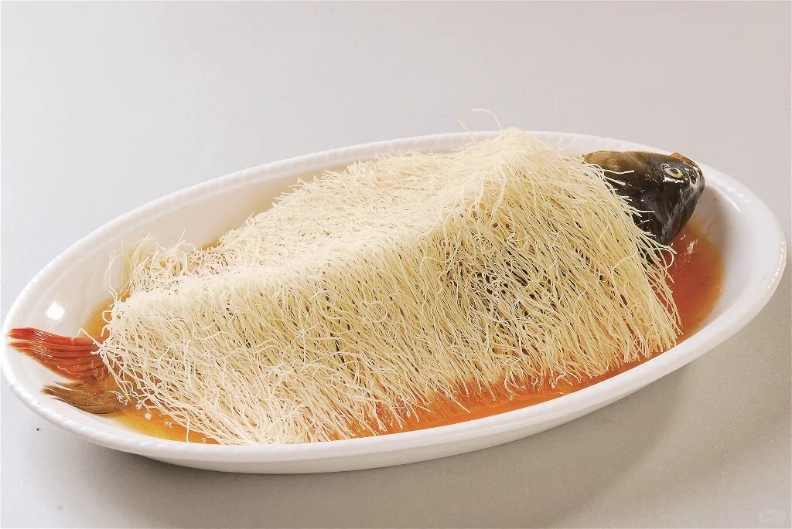
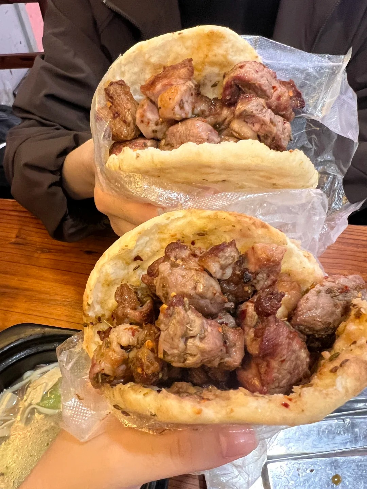
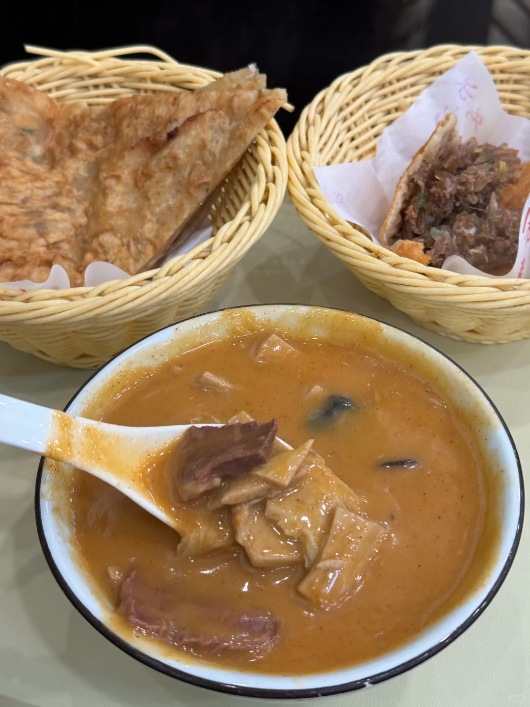
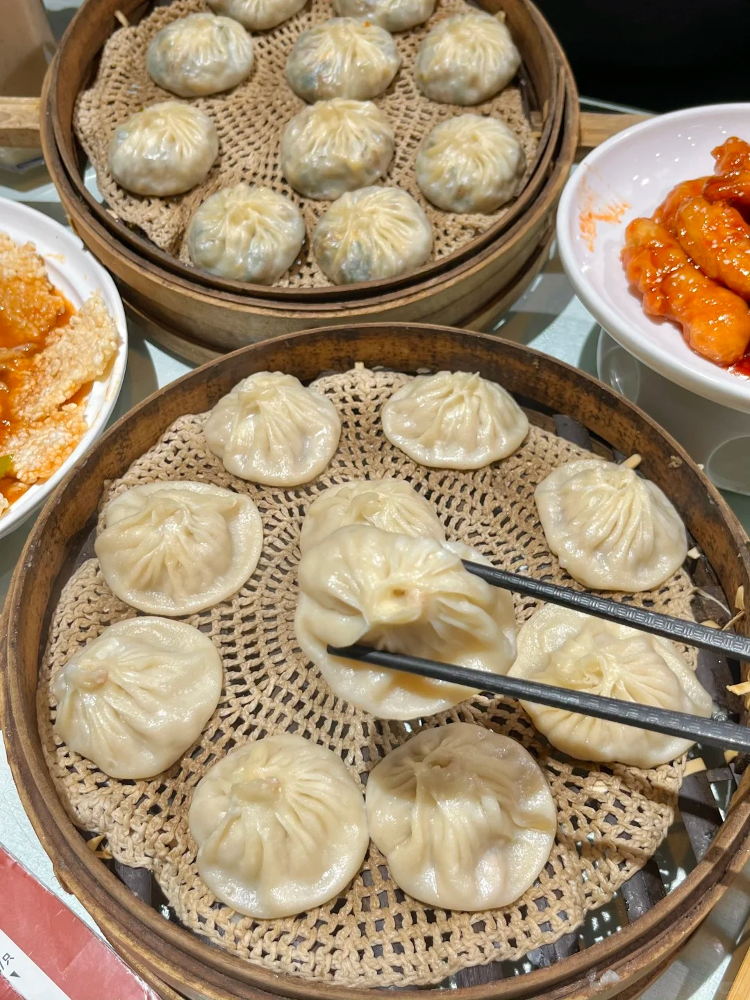

Hui Mian
The undisputed king of Zhengzhou noodles. Thick, hand-pulled wheat noodles swimming in a rich mutton or beef broth, topped with kelp strips, tofu threads, quail eggs, and a generous sprinkle of fresh coriander and chili oil.

Liyu Beimiandao
A signature Yellow River delicacy — a whole tender carp baked on a bed of fine knife-cut noodles. The fish juices soak into the noodles creating an unforgettable interplay of flavors and textures.

Shaobing with Lamb
Crisp, flaky sesame flatbread stuffed with slow-braised lamb, pickled vegetables, and a dash of cumin. A beloved street snack found on every corner of old Zhengzhou, best enjoyed fresh from the clay oven.

Hu La Tang
The essential Henan breakfast — a peppery, hearty soup brimming with shredded beef, vermicelli, peanuts, and wood ear mushrooms, seasoned with a bold mix of spices that warms you from the inside out.

Guantang Baozi
Soup dumplings with paper-thin wrappers encasing a burst of rich, savory broth and finely minced pork. Originating from nearby Kaifeng but beloved across Zhengzhou, they are a masterpiece of delicacy.